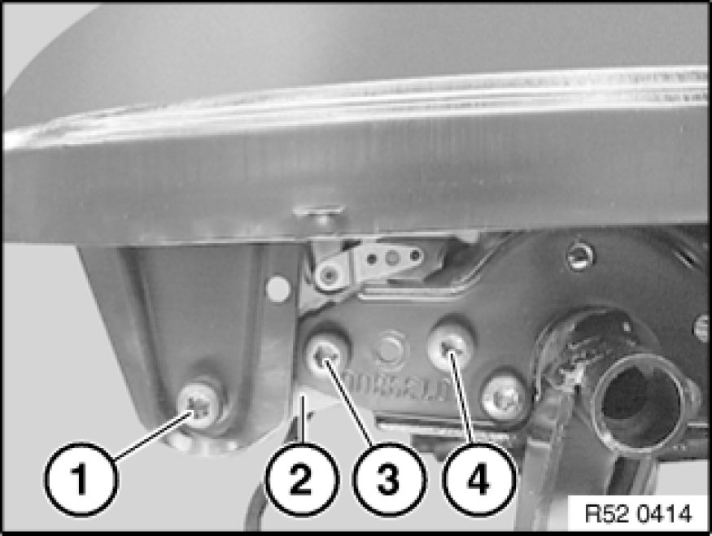
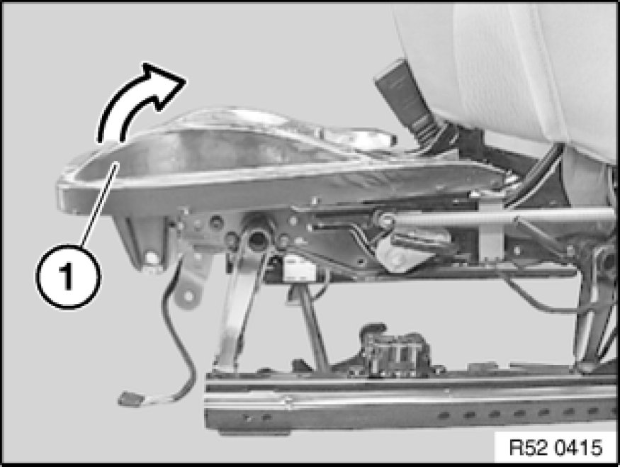
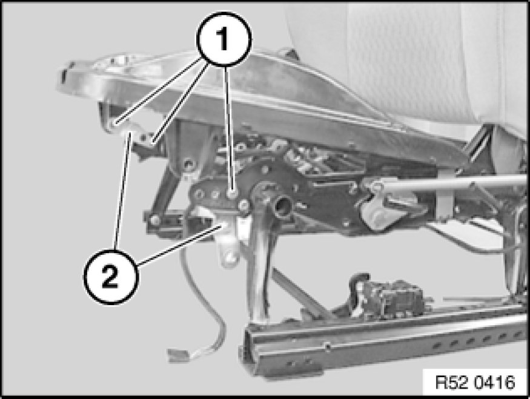
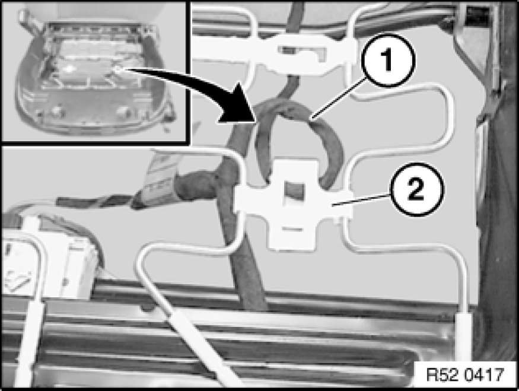
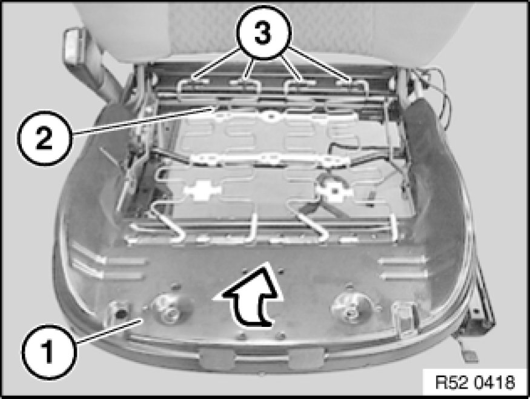
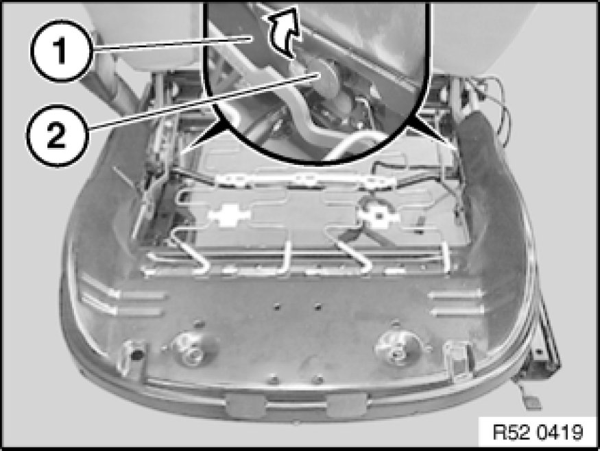
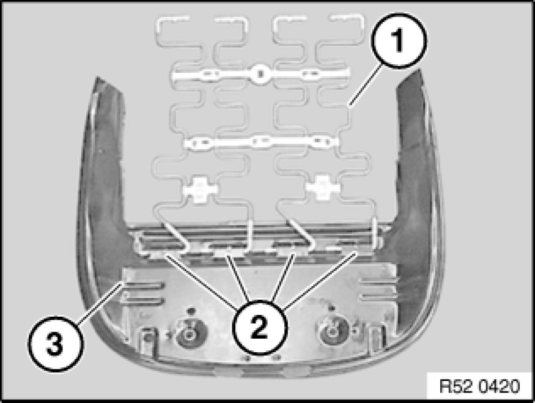

Removing and Installing/Replacing Seat Pan and Flexmat (Normal/Manual), Left or Right
52 13 ... - Removing and installing/replacing seat pan and flexmat (normal/manual), left or right
Remove seat cover with support,
refer to 52 13 400. Replacing Seat Cover on Left or Right Front Seat (Normal/Manual)

Release left screw (1) and slacken right screw only.
Release left/right screws (3).
Slacken left/right screws (4) only.
Remove left retaining plate (2) downwards.
Installation:
Tightening torque,
refer to Technical Data 52 10 9AZ. [1][2]Seats

Press seat pan (1) upwards, thereby relieving tension on flexmat.

Release screws (1) and remove retaining plates (2).
Installation:
Tightening torque,
refer to Technical Data 52 10 9AZ. [1][2]Seats

Unhook cable (1) from holder (2).

Turn seat pan (1) upwards.
Detach flexmat (2) at rear from mounts (3).

Detach seat pan (1) on left/right backwards/top from mount (2) and remove.

Detach flexmat (1) from mounts (2) on seat pan (3).